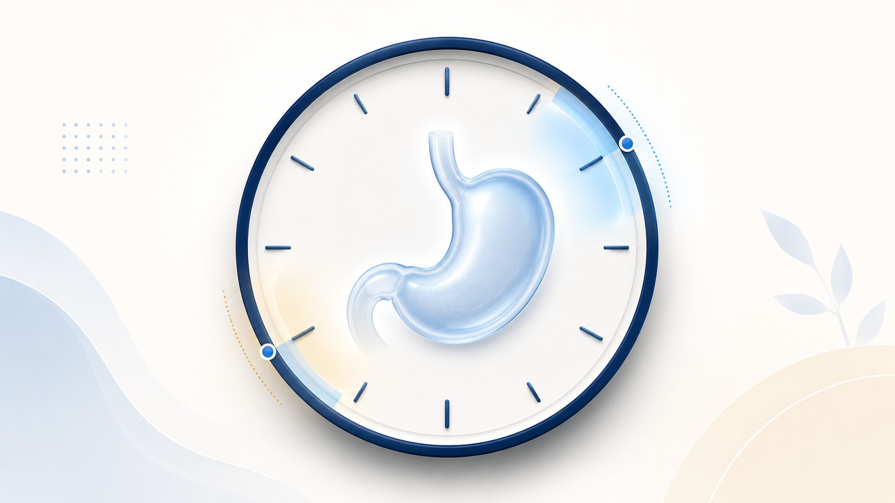
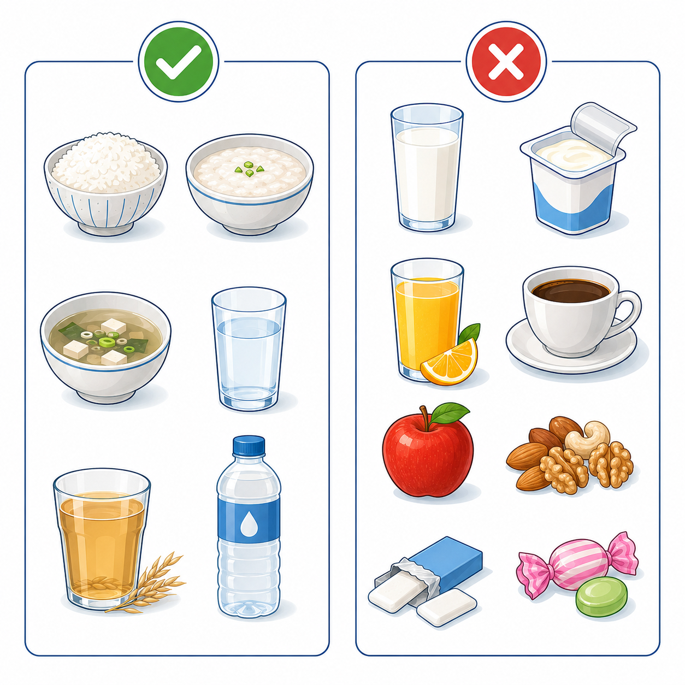

금식 타임라인 — 가장 중요한 한 가지
12
검사 12시간 전 (보통 전날 저녁 9시) — 음식 완전 중단. 일반식·우유·요구르트·유제품·과일·견과류·껌·사탕 모두 금지. 저녁은 가볍게 흰밥·죽·수프 정도로 마무리. 늦은 저녁 식사·야식은 위 잔류 위험이 크므로 피합니다.
2
검사 2시간 전 — 맑은 액체도 중단. 그 이전까지는 물 한 모금 가능 범위의 맑은 물·보리차·이온음료(투명색)만 소량 가능. 우유·주스·커피·차·붉은·보라색 음료·탄산음료는 8시간 전부터 모두 금지 (사이다·콜라 포함).
0
검사 직전 — 절대 금식 + 흡연·껌·사탕 금지. 침 삼키는 정도만 OK. 혈압약 등 꼭 필요한 약은 검사 4시간 전까지 소량의 물(50mL 이하)과 복용 — 자세한 복약 지시는 예약 시 안내합니다.


특수 약물 사용 환자 — 검사 예약 시 반드시 알려주세요
GLP-1 계열 (위고비·마운자로·오젬픽 등)
- 1. 위 배출 지연 → 표준 금식 후에도 위에 음식이 남을 수 있어 흡인성 폐렴 위험.
- 2. 권장 스케줄 (1차) → 주 1회 주사는 마지막 주사 후 7일째 검사 + 다음 날(D+1) 재개가 가장 깔끔합니다.
- 3. 7일 일정이 어려운 경우 → 검사 전 24시간 유동식·금식 연장 등 별도 안내. 자가 중단·연장 금지.
- 4. 증량 중·구토·복부팽만이 있으면 검사 일정을 의료진과 다시 조정합니다.
항혈전제 (아스피린·플라빅스·와파린·NOAC)
- 1. 단순 관찰 위내시경 → 대부분 약 중단 없이 가능 (출혈 위험 낮음).
- 2. 조직검사·용종 절제·치료 내시경 → 약제별 중단 기간이 다릅니다 — 플라빅스 5–7일, 와파린(warfarin) 5일 전(INR 확인), DOAC 24-48시간 전 조정 가능.
- 3. 자가 중단 금지 → 심혈관·뇌졸중 위험과 출혈 위험을 함께 보아야 하므로 반드시 주치의 상의 후 결정.
- 4. 검사 예약 시 약 목록 전체 지참 — 영양제·한약 포함, 출혈 영향 약 확인.
복약·당일 도착 · IMPORTANT
- · 혈압약 검사 4시간 전 소량의 물(50mL)과 복용 OK
- · 당뇨약·인슐린 당일 아침 중단 (저혈당 위험)
- · 철분제·비스무트(개비스콘) 3일 전 중단 (시야 방해)
- · 30분 전 도착 · 신분증·약 목록 지참
수면내시경 시 보호자 동반 · 검사 후 24시간 운전·음주·중요결정·기계조작 금지
검사 전·후 즉시 연락 사유
- 1. 검사 전 감기·기침·발열·새 증상 발생
- 2. 검사 전 음식·물 실수로 섭취 (시간 명시)
- 3. 검사 후 검은변·혈변·심한 복통·구토
- 4. 검사 후 발열 38°C 이상·가슴 통증·호흡곤란
- ☏ 031-893-4560 즉시 연락 — 야간·주말 응급 시 119